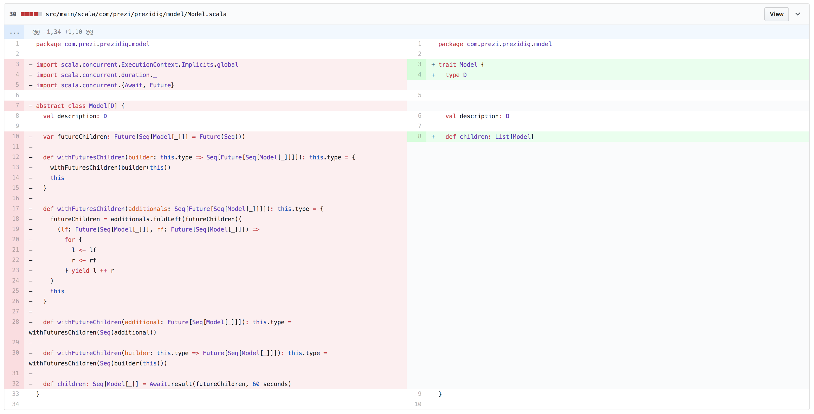
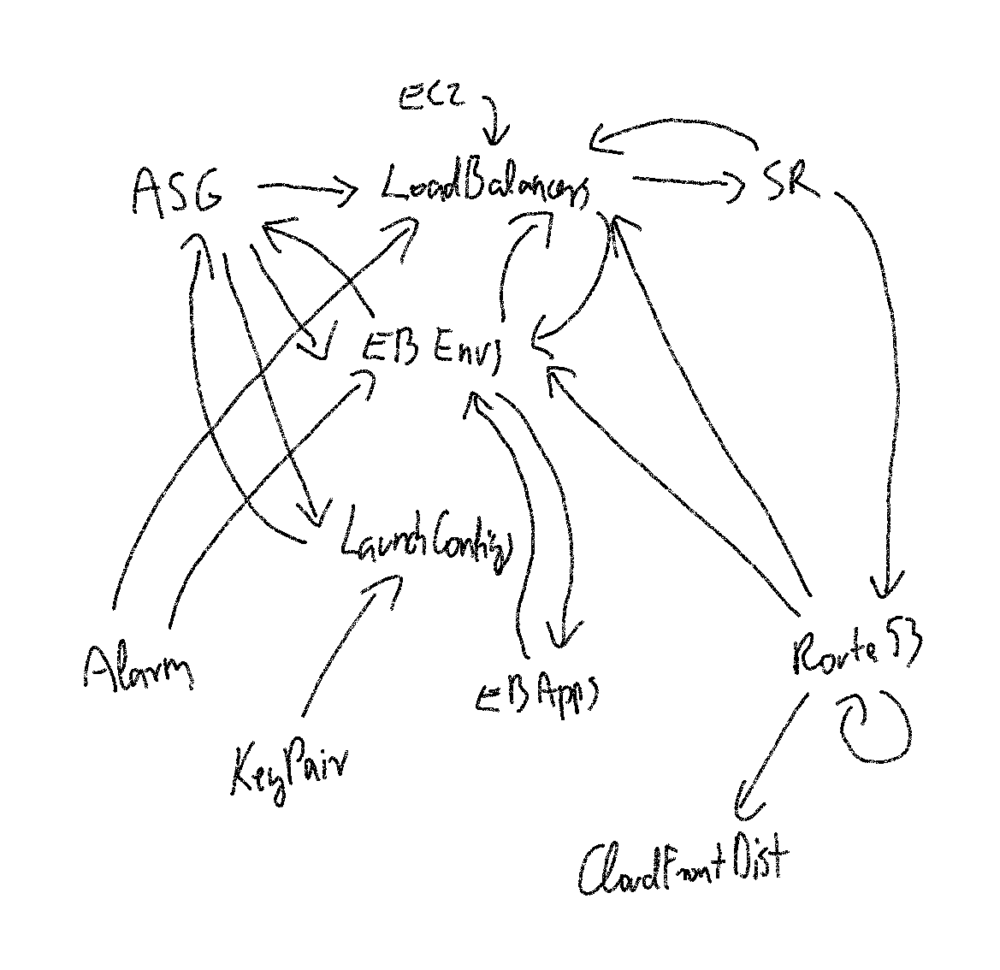
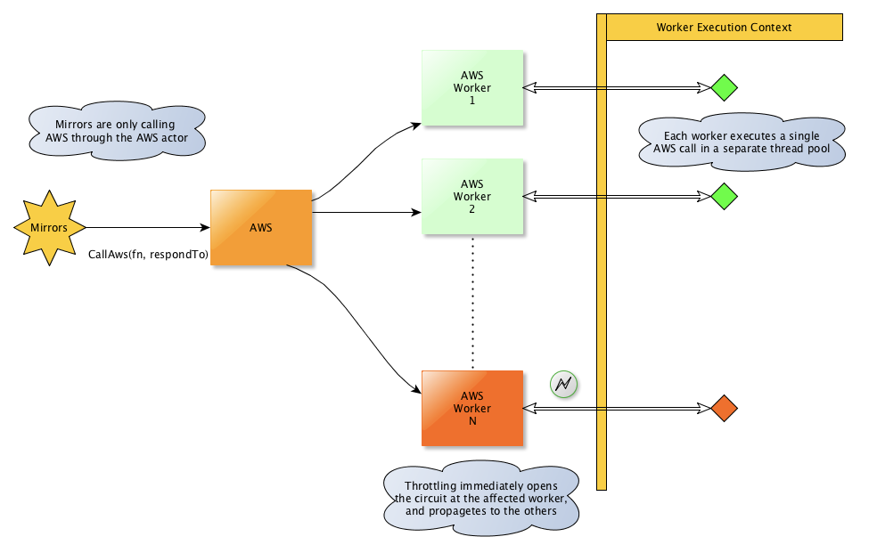

AWS rate limits vs prezidig
At Prezi, we have an internal tool called prezidig for discovering AWS resources. I like it a lot so I was quite annoyed recently that it always fails with a throttling exception because of our increased use of the AWS API. It made it completely unusable, so I decided to try to fix this.
Then I decided to write the story in this blog post, as the steps I had to made to achieve the results I aimed for can be useful for writing maintainable, fast and safe Scala code in the future.
I will describe the phases as they happened, as I did not really know anything about this codebase so the path to the success was not exactly clear immediately.
Wrapping the calls
So my initial thought was to just find the AWS API calls and wrap them in a helper function which catches the throttling error and retries with an increasing delay.
I basically wrote this in the base class of all the mirrors (the classes which are responsible for fetching AWS and other resource data for prezidig):
protected def byHandlingThrottling[T](awsCall: => T): Future[T] = {
def call(remainingTries: Int, wait: FiniteDuration): Future[T] = {
Future(Try(awsCall)).flatMap {
case Success(result) => Future.successful(result)
case Failure(awsException: AmazonServiceException) if awsException.getErrorCode == "Throttling" && remainingTries > 0 =>
akka.pattern.after(wait, actorSystem.scheduler) {
call(remainingTries - 1, wait * 2)
}
case Failure(reason) => Future.failed(reason)
}
}
call(10, 100.millis) // TODO: make configurable
}Then the only thing I had to do was to was wrapping all the existing AWS calls with this. Then I realized that this won’t be this simple, as these calls were not always asynchronous, just sometimes. To see an example, for an ElasticBeanstalk application, it fetches the application metadata with synchronous call, then fetches the related EB environments asynchronously. The whole thing might be wrapped in another future somewhere else, but that’s a different story.
While making these discoveries I also found several synchronization points, like the code waiting for some futures to complete in a blocking way. Also that the model is mutable. So… just for trying this out, I still wrapped all the AWS calls with this stuff, by converting the future back to a synchronous call by immediately blocking on it.
What did I achieve with this? Well, some throttling errors were fixed, the code became extremely ugly, and I could not even wrap everything so the errors remained, and because of the tons of blocking, timeouts, etc. it was basically impossible to understand whether this would work or deadlock or just be slow.
That was the point I decided to do this properly
Reflection
Before solving the real problem I found that the mirrors are initialized via reflection, something like this:
def buildMirrors[A <: RegionAwareAWSMirror[_, _]](implicit mf: Manifest[A]): Seq[A] =
Config.regions.map(region => mf.runtimeClass.getConstructor(classOf[String]).newInstance(region).asInstanceOf[A])This is something that you should avoid, as it leads to problems that are not detected by the compiler, only at runtime, every time you refactor something around these classes. There are some use cases where this may be required, like dynamically loading plugins or stuff like this, but to just have a factory for something, it is must simple to use… functions!
So I could not hold myself back and quickly changed this to:
def buildMirrors[A <: RegionAwareAWSMirror[_, _]](factory: (String, ActorSystem) => A)
Config.regions.map(region => factory(region, system))(Since then even this has disappeared, but don’t run that much forward).
Async fetching
Ok so the first obvious step was to refactor the whole fetching code in a way that it is just a chain of futures. By making everything async in the process, the AWS calls would be simply replaceable with the throttling function above or anything more sophisticated!
But I knew that I cannot safely do this while the model we are building itself is mutable - there is no way I want to debug what happens with it once all the steps are really becoming parallel!
Immutable model
I believe the following GitHub diff captures the core change of this step:

Of course I had to change all the subtypes of Model, and I went through the code looking for
- vars
- mutable collections
and got rid of them. Except for the caching constructs, because I planned to refactor those in the next step, so for now I left them alone.
Async mirrors
Once I felt the model is safe enough, I went to the next big change, making everything asynchronous.
This took some hours, to be honest. But really, the core idea is only that the result must be a Future[T], not T.
So how do you refactor a code that was previously half synchronous, half asynchronous to achieve this? Let’s see an example! It will be the key-pair mirror as it is the smallest.
Originally (with my ugly wrapping in the previous step) it looked like this:
override protected def fetch(input: SimpleParsedInput, context: Context): Seq[KeyPair] =
try {
val futureResult = byHandlingThrottling(
buildClient(AmazonEC2ClientBuilder.standard()).describeKeyPairs(
new DescribeKeyPairsRequest().withKeyNames(input.id)
))
val result = Await.result(futureResult, 10.seconds)
result.getKeyPairs.asScala.map(info => KeyPair(info, region)).seq
.map(keypair => keypair.withFutureChildren(LaunchConfigurationMirror(region, actorSystem).apply(context.withInput(keypair.description.getKeyName))))
} catch {
case _: AmazonEC2Exception => Seq()
}So as you can see fetching the key pairs by name was a synchronous request, but then the launch configurations are fetched asynchronously and are being updated back the result model in a mutable way. We want to transform this function so it does not have any side effects, just performs a chain of asynchronous operations and in the end have a fully fetched key pair with the related launch configurations.
In every case the only thing needed was a combination of map and flatMap on futures, and of course the for syntax can also be used to make the code more readable:
private def fetchKeyPair(client: AmazonEC2, context: Context, info: KeyPairInfo): Future[KeyPair] = {
for {
launchConfigurations <- LaunchConfigurationMirror(region, actorSystem).apply(context.withInput(info.getKeyName))
} yield KeyPair(
description = info,
region = region,
children = launchConfigurations
)
}
override protected def fetch(input: SimpleParsedInput, context: Context): Future[List[KeyPair]] = {
val client = buildClient(AmazonEC2ClientBuilder.standard())
byHandlingThrottling(client.describeKeyPairs(new DescribeKeyPairsRequest().withKeyNames(input.id))).flatMap { result =>
Future.sequence(
result.getKeyPairs.asScala.toList.map(fetchKeyPair(client, context, _))
)
}.recover {
case _: AmazonEC2Exception => List() // TODO: log?
}
}Note that the Future.sequence function is quite useful in these scenarios, as it makes a Future[List[T]] from List[Future[T]].
Of course the code became more verbose because of all this chaining, this is the price of this transformation. And why I don’t like to express complex logic with a chain of futures, rather with some higher level abstraction such as actors (or for this use case, streams would fit even better).
But I wanted to make iterative changes, so I did this transformation on all the mirrors and eventually got a Future[List[Model]] in the main function that I could await for. I also thrown out the global atomic integer that counted the running stuff for completion, as in this model the completion of the composed future should mark the end of the whole computation.
So did I succeed at this point? Of course not. Actually this whole thing is a big deadlock :)
Caching and circular references
It was not immediately obvious what causes the deadlock. In a system like this it can happen in different ways. For example I knew that there are global singleton caches in the code, protected by locks. This could cause deadlocks if all the executors got blocked and no new threads can be spawned by the active executor. I did not know if this is happening, but would not have been surprised at all, as much more things were happening in parallel because of the previous refactoring step.
And circular references in the huge chained future graph can also lead to this. Let’s consider this simplified example:
trait Cache {
def get(key: String): Future[Work]
def put(key: String, compute: () => Future[Work]): Unit
}
val cache: Cache = ???
val work1: Future[Work] = cache.get("work2").map { w2 => Work(s"Hello $w2")) }
val work2: Future[Work] = cache.get("work1").map { w1 => Work(s"Hello $w1")) }
cache.put(work1)
cache.put(work2)
println(Await.result(work1), 1.second)This can never work. If you think about what prezidig does, you will have a feeling that this happens. A lot.
But let’s go in order.
Non-blocking cache
First I wanted to get rid of the global, lock-protected mutable maps used as caches, and have a non-blocking implementation with more control and better performance and safety. This is the kind of job that an actor can model nicely, so I created a model cache actor that is spawned for each mirror and can store and retrieve lists of AWS models for a given key.
I won’t list the whole actor’s code here, let’s see the messages it consumes:
sealed trait ModelCacheMessage[M <: Model]
final case class Put[M <: Model](key: String, value: List[M])
extends ModelCacheMessage[M]
final case class FetchFailed[M <: Model](key: String, failure: Failure[_])
extends ModelCacheMessage[M]
final case class GetOrFetch[M <: Model](key: String, fetch: () => Future[List[M]], respondTo: ActorRef[Try[List[M]]])
extends ModelCacheMessage[M]
final case class GetRefOrFetch[M <: Model](key: String, fetch: () => Future[List[M]], respondTo: ActorRef[ModelRef[M]])
extends ModelCacheMessage[M]
final case class Dump[M <: Model](respondTo: ActorRef[Map[String, List[M]]])
extends ModelCacheMessage[M]This cache itself is responsible for executing the fetch function only if needed, when the value for the given key is not cached yet. It is done by using the pipe pattern: it starts the asynchronous fetch function on a configured worker executor (which can be the actor system, or a fix thread pool, etc.) and registers an onFinish callback for the future which pipes back the future’s result to the actor as actor messages (Put and FetchFailed).
I will talk about references and cache dumps in the next section.
There was one more big problem with the existing code that prevented introducing these cache actors: that the mirrors were not really singletons but some mirrors created new instances of existing mirrors (without any difference to the ones created in the main function). These shared the singleton mutable lock-protected cache map in the original version, that’s why it worked. But in the new implementation each mirror spawned its own cache actor, so it was no longer allowed to create multiple instances of the same thing.
So in this step I collected all the mirrors to a class called Mirrors, which later became the collection of all the resources needed to perform the “dig”, so in the final version it is called DigSite.
With this change the caching could be replaced, and with the ask pattern I was able to fit it to the chain of futures created in the previous step.
Did it solve the deadlock? No, of course not
Circular references
But now it was obvious that there are some circular references. And by simply drawing it, I could see that this is actually the core concept of the whole thing :)
Let me show you the drawing:

So everything refers back to everything, not a surprise that this chained-together code cannot finish.
To be honest, I was not sure how exactly did it work in the original version, whether the boundary of sync and async calls were carefully designed to make this work or just accidentally, whatever.
I wanted to have a solution where you don’t have to think about it so nobody will fuck it up next time when it has to be modified.
The chosen solution can be summarized in the following way:
- The models are only storing references to other models encoded by the
ModelReftype. A reference is basically selecting a mirror (by its cache) and an item in it by its key - When fetching a model, you immediately get back a model reference from the cache so it can be stored in the owner model, even with circular references. The real data is still fetched and cached as before.
- This works because nobody uses the actual child models until the rendering of the output. So we have the asynchronous, parallel fetching of all the models, and then a completely separate, non-async step where we need the real connections to actually render the output based on the templates. I could change how the rendering works to query the model references from the cache, but I did not want to touch that part. So I introduced a middle step where all the model cache actors dump their state to simple immutable maps, and then the model gets updated by selecting the referenced models from this map and changing a field. Yes, a mutable field. It is a non-threadsafe operation that has a single, well defined place to be called, and this way the whole third part (rendering the output) could remain untouched.
- Because of decoupling the actual fetching from the result future (it is completed earlier, as it only needs the references!), I had to have something that keeps track of the ongoing tasks ran by the cache actors, so there is also a work monitor actor that notifies the main logic once everything is complete.
Considering all this, the main steps before starting to render the output looks like this:
val result = for {
models <- runRelevantMirrors(digSite.allMirrors, Context.initial(input))
fetchingDone <- digSite.workMonitor ? WorkMonitor.WaitForReady
cacheDumps <- CacheDumps.fromMirrors(digSite.allMirrors)
_ = models.foreach(_.resolveChildren(cacheDumps)) // side effect!
} yield modelsAnyone else blocking?
At this point the tool started to work again and produce results. So I went back checking if any other blocking code remained that can be implemented in other ways. The progress tracker was like that, it had mutable state and locks, so I converted that to an actor too. It was quite simple, and on the usage side almost nothing changed compared to the original.
And what about the throttling?
Ok so at this point I refactored the whole stuff but still did not solve the throttling issue, right?
Right.
But now finally I knew how to do it!
I already wrapped all AWS calls with that specific function (and at this point it was really all calls, not just almost). So I just had to write it in a better way.
I wanted to:
- Have control on how many AWS requests are we doing in parallel
- In case of throttling errors delay everything as soon as possible
This can be achieved easily by some standard patterns like treating AWS as an encapsulated resource and putting some circuit breaking logic in it, and explicitly distributing the work among multiple workers.
Let’s see the designed solution on a drawing:

Note: the classic Akka has built-in support for this routing and circuit breaking, but I prefer Akka-typed because of its type safety, where there are no official reusable higher level components like this yet. The one I implemented here is quite specific, later could be refactored to be built from more reusable typed actor components.
So how does this work?
- There is a single coordinator actor called AWS and multiple (32 by default) worker actors called AWS Worker.
- The number of worker actors control the maximum number of parallel AWS operations, because each worker actor is guaranteed to run maximum one such operation at the same time. All the other incoming requests are distributed among the workers and gets enqueued.
- The AWS calls are executed on a different thread pool, not blocking the actors. Their result is sent back by the already mentioned pipe to pattern
- AWS throttling errors are detected on the worker nodes, and the worker node immediately switches to open circuit state in which it does not start any new AWS command. The length of the open state increases with every throttling error, and gets reseted after a number of successful requests.
- Opening the circuit breaker on one worker node is immediately followed by opening it on all other worker nodes too, to stop overloading AWS.
This could be further improved with more advanced logic but I believe it is good enough for our current purposes, and now we can use prezidig again!
comments powered by Disqus